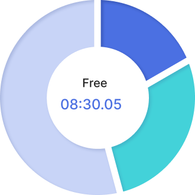
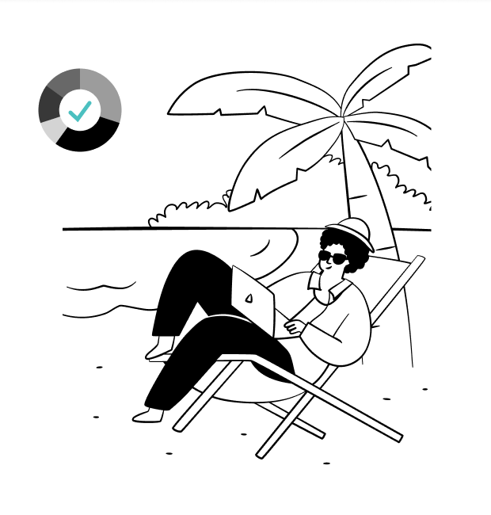
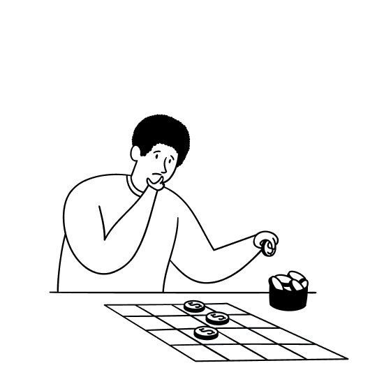

See your real capacity
Fixed routines come out first, revealing the hours you can actually use.

See the hours you can truly use—then focus them on high-impact work without overloading the day.
See Your Focus Budget

Client work, product, marketing, maintenance, and life all compete for the same day. Before you commit, see what actually fits.
Account for real life, fund your priorities,
and improve every estimate.
Fixed routines come out first, revealing the hours you can actually use.

Add estimates to see what fits—and what needs to wait.
Compare planned and actual time to make better commitments next time.
Calendars show when. To-do lists show what.
TimeBudget shows what still fits.
Work, sleep, and routines
come out first.
Give usable hours to
high-impact work.
Use actual time to make
the next plan better.
No. Your to-do list shows everything you could do. TimeBudget shows what your day can actually hold.
No. It makes capacity and trade-offs visible, so you can choose with confidence.
The difference is useful evidence—not a score. Use it to make the next commitment better.